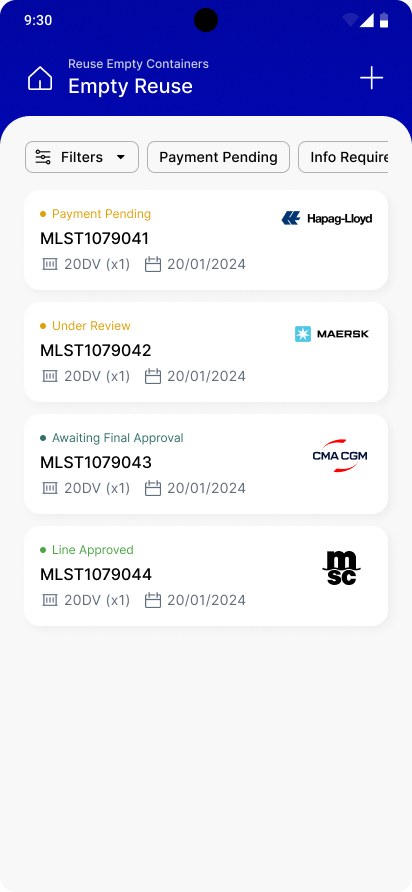
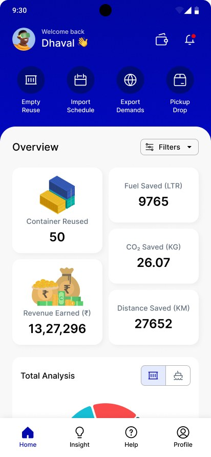
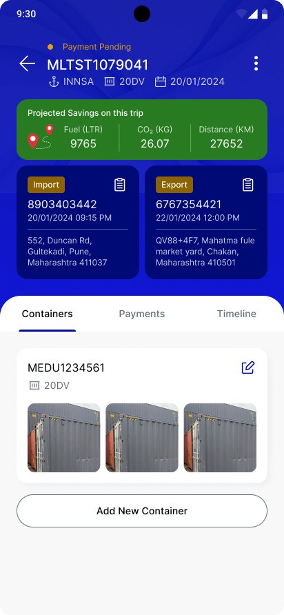
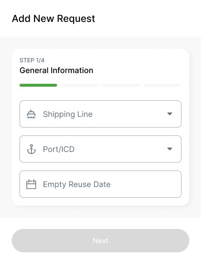
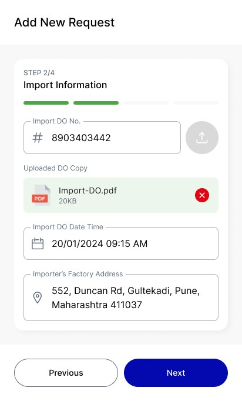
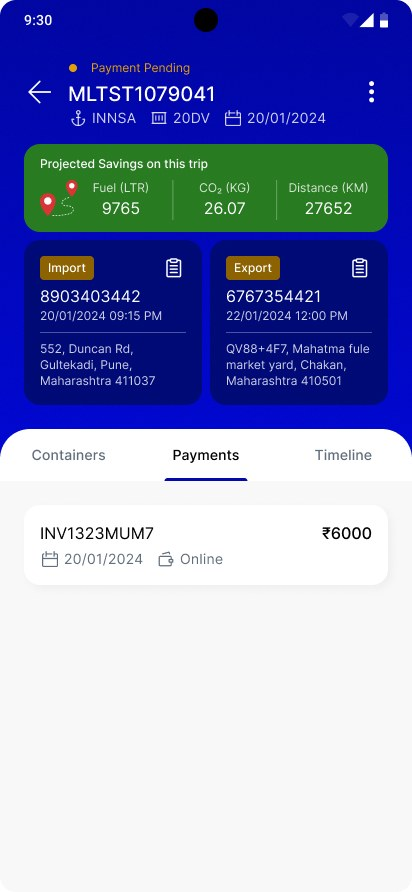
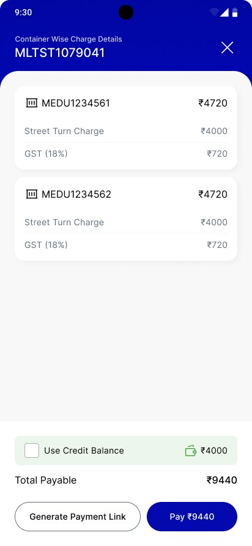
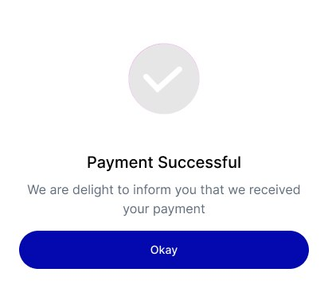
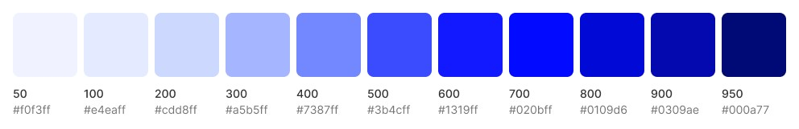

A field-first mobile app that matches empty import containers to nearby export demand — cutting empty miles, fuel and CO₂ while turning idle assets into revenue.
Empty Reuse is the field-facing mobile app in the MATCHLOG logistics platform. It lets coordinators turn an emptied import container into a “street turn” — reusing it for a nearby export instead of hauling it back to the port empty. The app handles the match, the shipping-line approval and the payment, and shows the fuel, CO₂ and money saved on every trip.
Empty container repositioning is one of logistics’ biggest hidden costs — trucks moving boxes that carry nothing. The reuse that fixes it has to be arranged at the yard, in the moment, across multiple shipping lines, with approvals and payment in the loop.
The design problem was fitting that whole coordination — match, approve, pay, prove the savings — onto a phone screen a coordinator can drive with one thumb, standing next to the container.
After an import is unpacked inland, the empty container is usually trucked all the way back to the port. Meanwhile a nearby exporter books a fresh empty from that same port. Two one-way empty hauls — fuel, emissions and cost — for a box that was already in the right place.
The match was the hard part. Spotting a reusable empty, finding a nearby export demand, and getting the shipping line to approve the swap was a chain of calls and messages — done back at a desk, long after the container had already started moving.
No-one could see the win. The fuel, distance and CO₂ avoided by a reuse never showed up anywhere, so the behaviour that saved the most money was the easiest one to skip under time pressure.
The people who can catch a reuse are rarely at a computer. Mapping where the decision actually happens pointed straight to mobile-first.
Put the whole coordination loop on a phone, and make the savings impossible to miss.
Fuel, CO₂, distance and revenue saved sit at the top of the app — the reason to reuse is the first thing you see.
Raising a request is a short, thumb-friendly wizard — shipping line, port, date, containers — done standing next to the box.
Line status is never a mystery, and street-turn charges are itemised per container with GST before a rupee is paid.
A flat, linear spine keeps the whole reuse on a single track — with a status pill the coordinator and the line both read the same way.
A persistent bottom bar — Home · Insight · Help · Profile — keeps the four anchors one tap away anywhere in the flow.
Skeletons first — proving that the savings, the list and the four-step request all fit a one-handed screen before any colour went in.
The dashboard opens on what reuse achieves — containers reused, fuel, CO₂, distance and revenue — then the status mix and where the boxes are. The motivation to reuse is the first thing in view.
Containers reused, fuel, CO₂, distance and revenue lead the screen — the environmental and financial win is the headline, not a buried report.
The Total Analysis donut breaks 200 containers into Pending, Under Review, Approved, Rejected and Awaiting — the same status language used on every list.
Empty Reuse, Import Schedule, Export Demands and Pickup-Drop sit one tap from the top, so the common jobs never need a trip through a menu.
A simple ranked list — Pune, Nashik, Vasai, Panvel, Morbi — shows where reuse is concentrated, with a list/map toggle for either mental model.
A four-step wizard breaks the request into thumb-sized chunks — general info, the import and export it pairs, and the containers — with a progress bar so it’s always clear how much is left.


Shipping line, port and date come first; the import/export pairing and containers follow. Each step is a single decision, sized for one hand.
A green bar fills across the four steps, and Next stays disabled until the step is valid — so a request can’t be half-built or bounced for a missing field.
Shipping line and port are pickers, not free text — the data that gates line approval is captured cleanly the first time, at the source.
Container photos attach to the request, giving the line desk what it needs to approve without a follow-up call.
A reuse is an import paired to an export. The detail screen shows both sides at once, the projected savings for the trip, and tabs to drop into containers, payments or the timeline.

Import and export blocks sit together with their DO numbers, times and addresses — the coordinator reads the whole match without scrolling between screens.
A green band shows fuel, CO₂ and distance saved for this exact reuse — proof of the win sits on the record it belongs to, not just the dashboard.
Containers, Payments and Timeline split a dense record into three calm views, so each answers one question instead of one endless page answering all three.
Container cards carry their photos and an inline edit, and a new one is added without leaving the match — the record grows where you’re already looking.
The list carries every request’s line status; payment itemises the street-turn charge and GST per container, offers credit, and ends on a clean confirmation.


Payment Pending, Under Review, Awaiting Approval, Line Approved, Line Rejected — each request wears its state, paired with its shipping line, so nobody chases an update.
Each container shows its street-turn charge and 18% GST on its own card, so the total is never a black box — you see exactly what you’re paying for.
Apply a credit balance, pay the total outright, or generate a payment link for someone else to settle — the screen meets whoever actually holds the money.
A full-screen success state confirms the payment plainly and drops the coordinator back to the reuse — the loop ends, and the savings are now booked.
A single electric-blue ramp, a clear status palette and large touch targets — tuned so dense logistics data still reads at a glance in daylight.

Putting the reuse loop in the coordinator’s hand — and the savings on the home screen — turned a skipped, back-office task into something done at the yard, in the moment.
Every reuse now carries its own proof — fuel, CO₂ and distance saved — so the most sustainable choice is also the most visible one. The container that used to ride back empty earns its next trip instead.
Product UI shown is the live Empty Reuse mobile app; sample IDs, customers and amounts are illustrative. Result figures reflect the in-app savings dashboard.